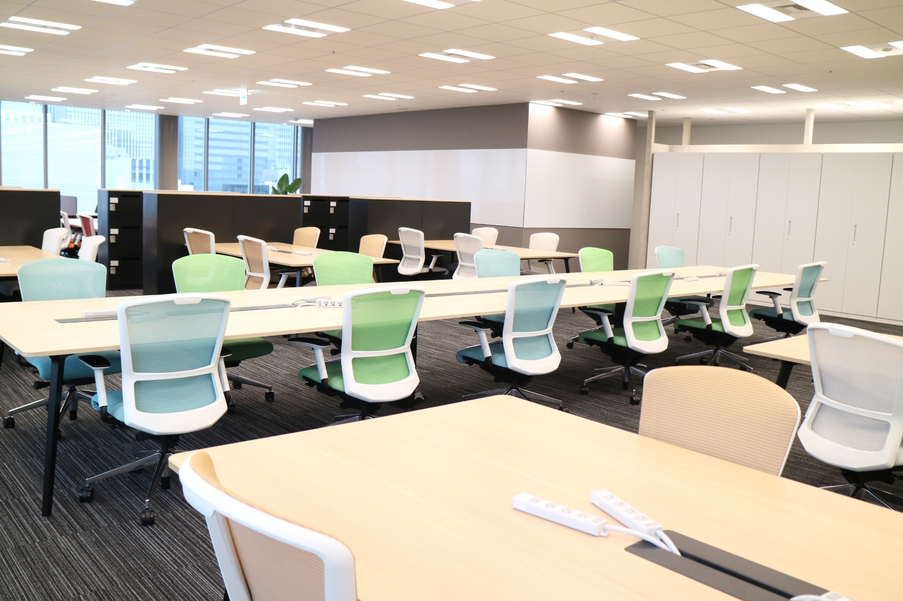

AI・クラウド・インフラ・アプリ開発まで。幅広い技術領域で、“自分の強み”を伸ばせる環境があります。
ピックアップ求人
正社員：450〜800万円
会社概要・事業内容
職種・プロジェクト・案件例
福利厚生・オフィス環境

社員インタビュー
採用チャットボットが、あなたの疑問に24時間・365日いつでも回答します。
CLINKSは、「もっと技術を伸ばしたい」「理想的な環境で働きたい」そんな思いに伴った働き方を応援しています。